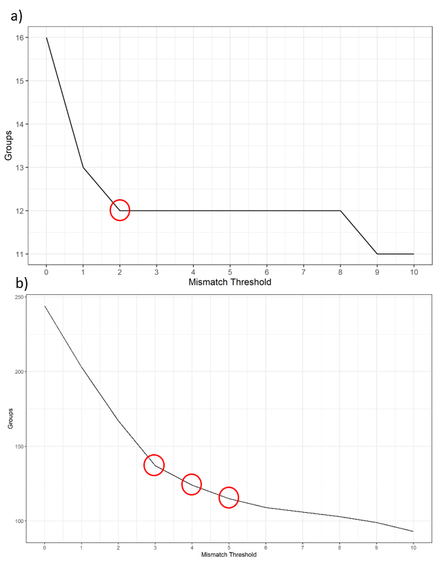
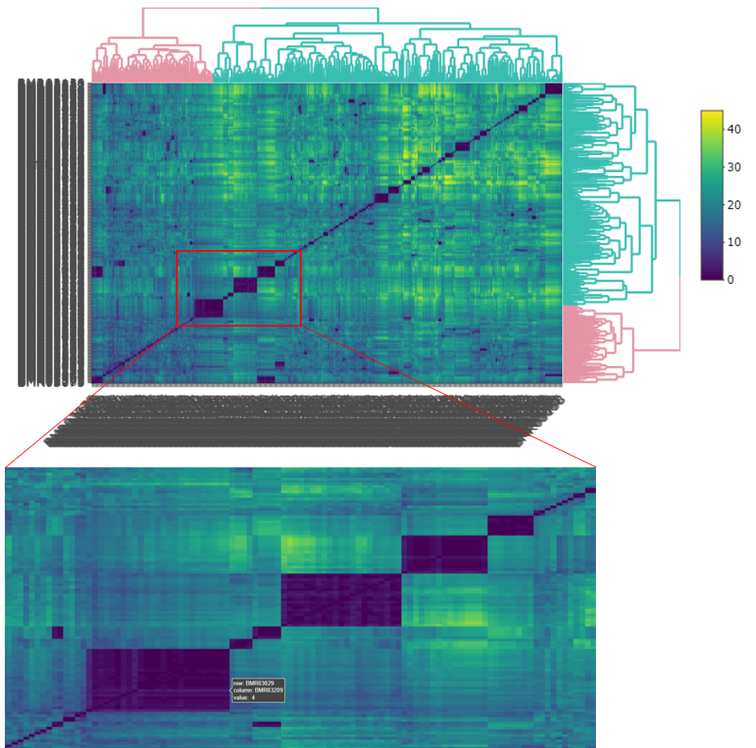
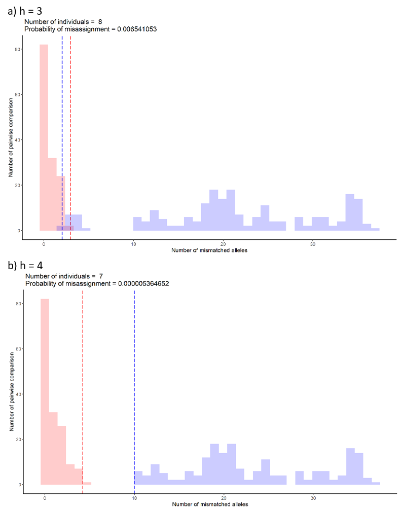

Introduction
Clustering is about finding similarities between samples so that they can be grouped which, in essence differentiates individuals within the data. The functions here will use hierarchical clustering methods on a calculated mismatch scores.
Finding dissimilarities
The function below creates and stores a lot of data which is why you need to assign it to an object. The list object that it creates, stores among other data, mismatch scores and dissimilarity matrices.
# create dissimilarities and store in an object
dis_list <- dissimilarity(filtered_alleles = "numerical_alleles_filtered_at0.8_mt0.2.csv",
errors = "sample_error_results.csv")Note that the filtered alleles data input is the final dataset that was created in the last article.
Visualisation for (h)
The task at hand now is to determine a height (h) at which to “cut” the data or define the maximum number of allele differences allowed to allocate samples as the same individual. This makes the most sense when you look at the dendrogram plot. The height will determine how many groups are created from the data and thereby how many individuals there in the sampling.
The code section below will generate a dendrogram, an elbow plot, a histogram of mismatches, a heat map and a heat map of correlations. The heat maps are plotly objects which enable the user to interrogate the plot using the mouse cursor on the html outputs. These are all saved to the results/cluster/ directory.
# create some visualisations to determine (h)
dendro_plot(dist = dis_list)
elbow_plot(dist = dis_list, maxh = 10)
freq_hist(dist = dis_list, bins = 30)
heat_plot(dist = dis_list)
heat_cor_plot(dist = dis_list)Note the maxh or maximum height (h) parameter for the elbow plot will make a longer x-axis but most plots will stabilise with a value of 10 (default). The bins parameter in the the frequency histogram determines the number of bins with which to display the data.
Another way of visualising is to generate histograms of the within group and between groups mismatches at various values of (h). Overlap between the distributions can indicate misassignment of group inclusion. These plots can be thought of as genetic distance plots. In the function to follow:
lt - is the lower percentile of the “between” groups distribution and in the plots is represented by a blue dashed line.
ut - is the upper percentile of the “within” group distribution and in the plots is represented by a red dashed line.
bins - is how many bins to split the data into for the histograms. Ensure that it is the same as used for the frequency histogram featured above. This will make comparison between the two easy.
The area between these two values is the overlap feature space and by running many simulations, the probability of distributions overlapping here determines the misassignment probability. The function defaults to the lt and ut values as below and is supported in the literature.
# misassignment plots and
misassign(dist = dis_list, maxh = 10, lt = 0.005, ut = 0.995)The (h) value is captured in the file name of the plot. A csv file, misassignment_table.csv, is also saved which summarises these values at each (h).
Selecting (h)
The elbow graph, heat map and misassignment graph are designed to help users identify the most likely (h). These graphs may not agree on a specify value and it is up to the user to pick this value. The choice of (h) depends on quality of the data and how conservative the user is in selecting (h). For instance, the user may choose to be more stringent if the data is very good quality and the error rate between replicates is low. However, if the data quality is not great i.e. incomplete, high error rate etc, the user may want to adopt a more conservative choice knowing that he/she is likely to underestimate the true number of individuals. On the other hand, being too stringent may over estimate the true number by over splitting samples that belong to the same individual. In addition, the user may want to try different filter settings for both loci and individual genotypes to see if the grouping would change with different settings. This final decision should be accompanied by sexing results (to be updated) and the metadata to see if the grouping makes biological sense. The decision of choosing the most likely (h) for each type of graph is described below.
Elbow graph
To determine a suitable (h), the user needs to look for the largest drop of group number as well as the value when the graph starts to flatten out. For the example below, a) shows a mismatch threshold of 2 would be a suitable value to select. However, with some data such as b) where the graph doesn’t show a clear drop. Thresholds of 3, 4, and 5 are all potential. You would need other types of graphs to make the decision.

Heat maps
In the interactive version of the heat map, you can zoom in to the area of interest by dragging a box around the area. You can hover the mouse over the edge of each deep blue coloured box to inspect how many allele differences between inside and outside the box. Try a few boxes, especially those that are large in size, then compare them with more distinct smaller boxes to get an idea of what would be a potential (h).

Misassignment graphs
The misassignment graph plots frequency of allelic differences within and between groups assigned by selected (h). The graph assumes allelic differences between groups to follow a binomial distribution (blue). Any allelic differences falling outside the distribution are likely to be caused by other means such genotyping errors or variation between samples from the same individual (red). At each (h), the graph will indicate how many groups or individuals are detected. This number is the same number as shown in the elbow graph. The probability of misassignment is also calculated which can be converted into the percentage of error.
For example, the probability of assigning samples to a wrong group is 0.006% for graph a) compared to a smaller number, 0.000005% for graph b). The maximum suggested percentage is 0.5%.
Overlap of the upper 0.995 percentile (red dashed line) and lower 0.005 percentile (blue dashed line) suggest the possibility of misassigning samples to between and within group distributions. The location of the overlap suggests which distribution the samples will likely to misassign to. For example, if the overlap falls in the within group distribution (red), the samples from the between group distribution (blue) are likely to be misassigned to the within group distribution (red). From the example of the graph below, the most likely (h) would be 4 because a clear separation between within (red) and between (blue) distributions.

Create the groups
After looking at all of the plots, an (h) value should be apparent and it is now time to apply it to the data and create some groups. Make sure you adjust (h) to your value.
# create groups
majorities(dist = dis_list,
h = 4, errors = "sample_error_results.csv")This will create 2 new csv datasets in results/cluster/:
hclust_numerical_mismatch_h4_group_majorities_and_ties.csv - this data is organised by group, and shows the sample membership, the numerical alleles, majority vote of the alleles, whether there were any ties in the vote and average amplification rate.
hclust_numerical_mismatch_h4_withGroups.csv - this is just the numerical allele data with groups assigned.
Note that the (h) value used to create the cut forms part of the file names to avoid confusion if multiple runs are undertaken.
Lastly, to aid visualisation of allele differences within each group, colour formatted html tables can be created by running the function below. This will save a file called majorities_table.html in the results/cluster/ directory.
# majorities html scrollable table
majorities_html(majorities_csv = "hclust_numerical_mismatch_h4_group_majorities_and_ties.csv")That completes the clustering work. The next article, Summaries, shows how to make a map linking the samples to your metadata and some other summary data.